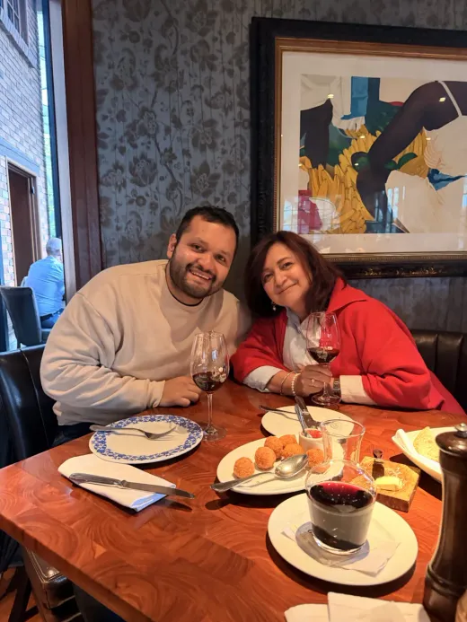
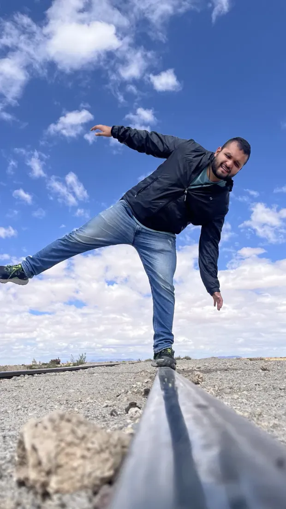
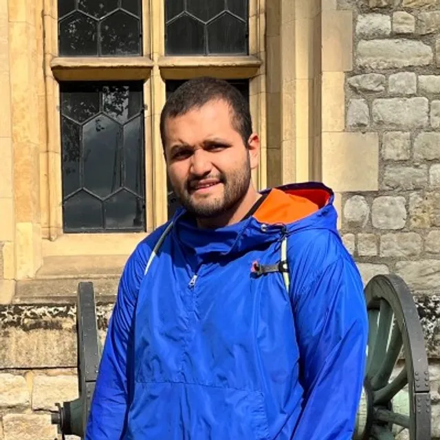
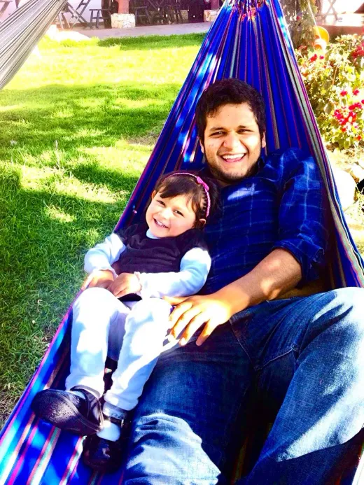
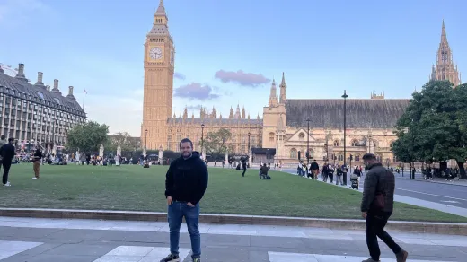
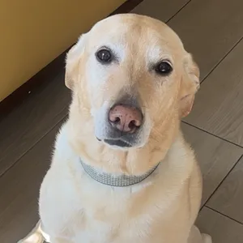
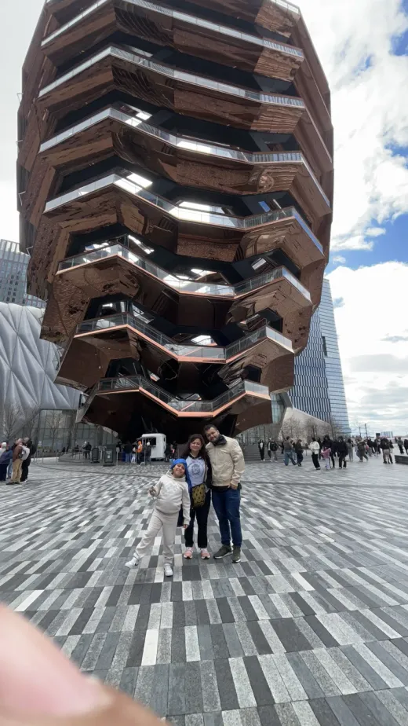
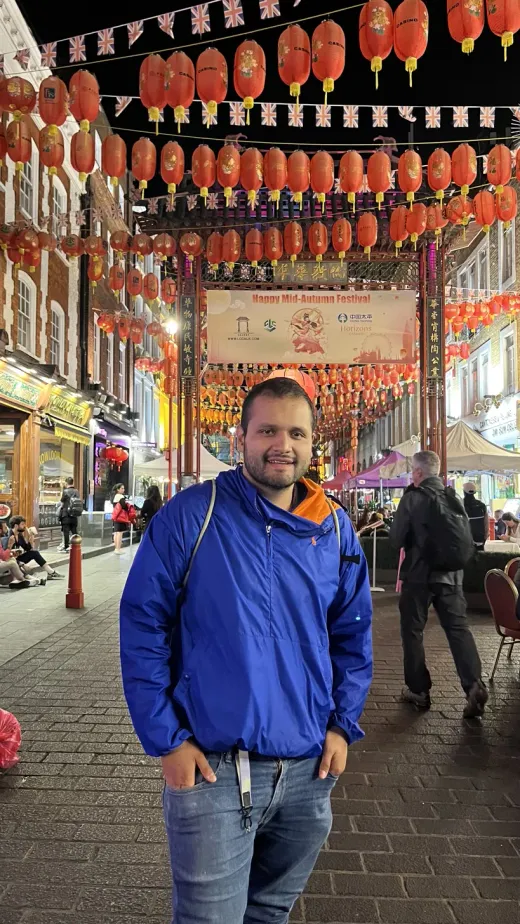
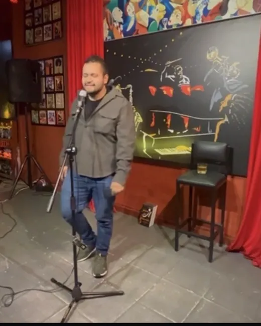

Mi mamá
Le debo la curiosidad y la terquedad, en partes iguales. Mi compañera de viajes favorita y la primera persona que me enseñó a mirar dos veces antes de creer algo.
El lado humano · sin filtros corporativos
La página de Inicio te cuenta qué hago. Esta te cuenta quién lo hace: un bogotano que colecciona formas de mirar el mundo y que, en el fondo, solo quiere una vida con significado y tiempo para gozársela.

Soy bogotano y economista de formación, pero la verdad es que colecciono formas de mirar el mundo. Estudié economía, aunque a quien de verdad amo es a la historia: me fascina cómo los grandes fenómenos —las crisis, las modas, las revoluciones— explican a la gente mejor que cualquier modelo. Ahora ando metido en una maestría en inteligencia artificial, y entremedio leo filosofía, psicología y antropología. De niño era el callado del salón, el que en vez de jugar desarmaba cosas para entender cómo funcionaban por dentro. Una vez dejé el equipo de sonido de la casa fuera de combate intentando arreglarlo. No lo arreglé — pero la pregunta nunca se me quitó, y es básicamente la misma que me pagan por responder hoy: ¿por qué esto hace lo que hace?
Esa curiosidad me ha llevado a sitios raros. Me subí dos veces a hacer stand-up frente a desconocidos, y es de lo más memorable que he hecho. Y pasé diez días en silencio total: durísimo, pero a la final valió la pena — creo que salí un poco mejor persona.
Trabajo con datos porque me obsesiona entender qué es verdad y qué es ruido. Pero si me preguntas quién soy, no te voy a hablar del Excel. En el fondo quiero algo simple de decir y difícil de lograr: una vida con significado y tiempo para gozármela. Viajar en cada cumpleaños, estar con la gente que quiero y tener a Apolo esperándome en la puerta.

Mido cosas para vivir, pero a estas dos no las mide nadie. Son el porqué detrás de todo lo demás.

Le debo la curiosidad y la terquedad, en partes iguales. Mi compañera de viajes favorita y la primera persona que me enseñó a mirar dos veces antes de creer algo.

La razón por la que pienso en el largo plazo. La mejor cosa de mi vida que jamás aparecerá en un modelo — y la única auditoría que de verdad me importa pasar.






